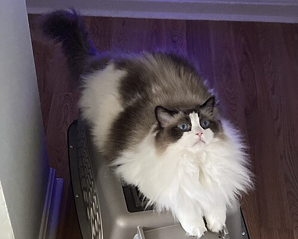

Ragdoll
The Ragdoll is a breed of cat with a distinct colorpoint coat and blue eyes. Its morphology is large and weighty, and it has a semi-long and silky soft coat. American breeder Ann Baker developed Ragdolls in the 1960s. They are best known for their docile, placid temperament and affectionate nature. The name Ragdoll is derived from the tendency of individuals from the original breeding stock to go limp and relaxed when picked up. The breed is particularly popular in both the United Kingdom and the United States. Ragdolls are known as dog-like cats due to their tendency to follow people around, their receptiveness to handling, and their relative lack of aggression towards other pets.Ragdolls are distinguishable by their pointed coloration (where the body is lighter than the face, ears, legs, and tail), large round blue eyes, soft, thick coats, thick limbs, long tails, and soft bodies. Their color rings are commonly tricolor or bicolor.
History
A bicolor Ragdoll cat
The breed was developed in Riverside, California, by breeder Ann Baker. In 1963, a regular, non-pedigreed, white domestic longhaired cat named Josephine produced several litters of typical cats. Josephine was not of any particular breed, nor were the males who sired the original litters. Ann Baker herself said that the original cats of the Ragdoll breed were "alley cats". Josephine later produced kittens with a docile, placid temperament, affectionate nature, and a tendency to go limp and relaxed when picked up. Out of those early litters came Blackie, an all-black male, and Daddy Warbucks, a seal point with white feet. Daddy Warbucks sired the founding bi-color female Fugianna, and Blackie sired Buckwheat, a dark brown-black Burmese-like female. Both Fugianna and Buckwheat were Josephine's daughters. All Ragdolls are descended from Baker's cats through matings of Daddy Warbucks to Fugianna and Buckwheat.

Thank you!!!
go back>>>